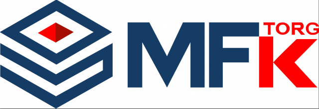

MITEX 2026 · Россия · Стенд 7С203
МФК-Торг, ООО
Карточка проверена 10 ноября 2026, 09:25 · Источник ↗ · Снимок оригинальной карточки ↗
О компании
МФК-Торг — более 15 лет на рынке промышленных комплектующих. Компания специализируется на оптовых поставках промышленных колёс и за годы работы сформировала широкий ассортимент продукции для предприятий по всей России. Сегодня МФК-Торг — надежный поставщик для производственных, мебельных, рекламных и торговых компаний. Налаженная система закупок, складского хранения и логистики позволяет обеспечивать стабильные поставки и соблюдать согласованные сроки. Наши преимущества: широкий ассортимент колес и комплектующих; решения для нагрузок от легкого оборудования до тяжелых промышленных конструкций; подбор аналогов и технических решений под задачу заказчика; поставки оптом и мелким оптом; работа с производственными, торговыми и сервисными компаниями; оперативная обработка заявок и комплектация заказов; возможность регулярных поставок для серийного производства. МФК-Торг ориентирован на долгосрочное сотрудничество и стремится обеспечить заказчика надежными комплектующими, стабильными поставками и конкурентными условиями.
Контакты
Все контактные сведения из карточки
Контакты Московская область, Ленинский городской округ, Каширское шоссе 31 км, зд.38/2 Телефон: 84951087808 E-mail: mfk04@mfk-torg.ru Адрес: Россия, Московская область, Видное, Московская область, Ленинский городской округ, Каширское шоссе 31 км, зд.38/2 Веб-сайт: http://www.mfk-torg.ru E-mail: mfk04@mfk-torg.ru Телефон: 8 495 108-78-08
Все рубрики участника
Зал
- Зал № 7
Участник выставки
- MITEX
Фотографии и изображения

Видео, каталоги и документы
В доступной карточке нет видео или документов. Смотрите сайт участника.